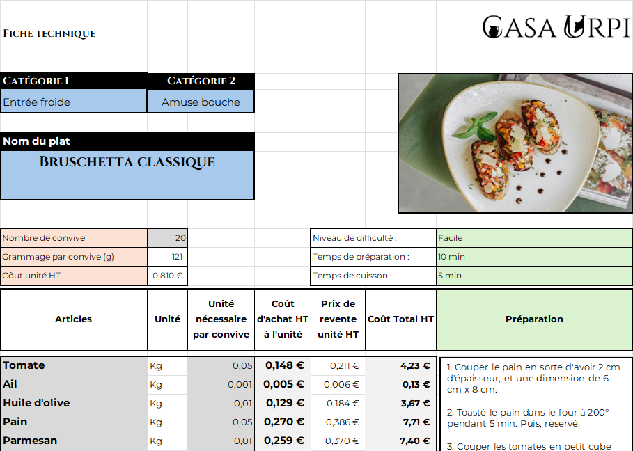
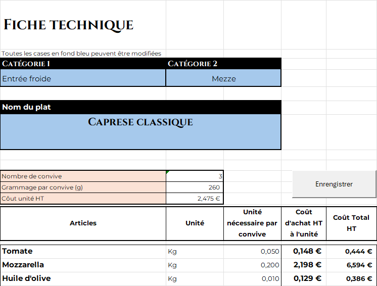
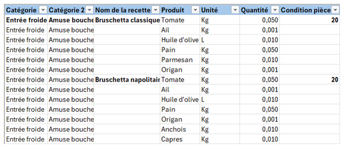
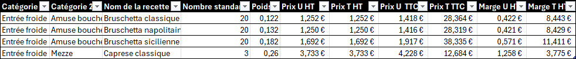
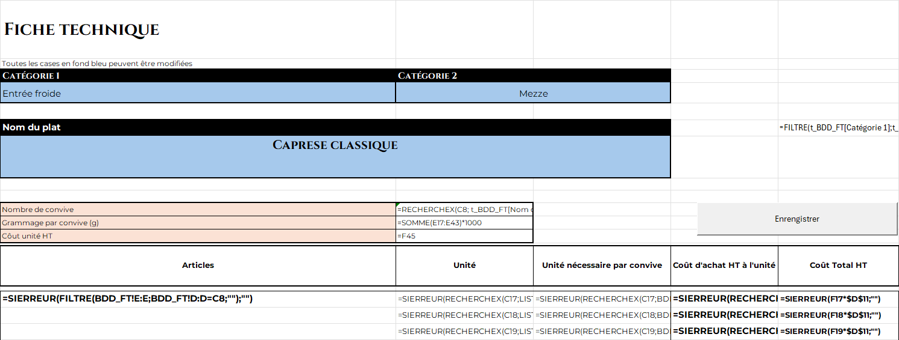

Excel — Modèle 02
Casa Urpi — fiches techniques et coût matière
Exercice de modélisation : construire un outil qui calcule automatiquement le coût matière d'une recette, du prix d'achat des ingrédients au prix de revente, et qui édite une fiche technique par plat. Casa Urpi est un nom de marque inventé.
Contexte
Le coût matière est la donnée qui conditionne la marge d'une carte. L'objectif était de réunir dans un seul classeur la base des recettes, les prix d'achat des ingrédients et le calcul du coût par portion, afin que toute mise à jour d'un prix se répercute automatiquement sur la fiche technique et sur le prix de revente.
Méthode
Le classeur s'organise autour de plusieurs blocs reliés entre eux :
- une base de données de recettes : chaque plat est relié à ses produits, unités et quantités par portion ;
- un catalogue d'ingrédients, avec des prix d'achat relevés dans des catalogues fournisseurs réels (Rungis Market, Aventure Bio, Mozzalat, Compos-table) ;
- la fiche technique d'un plat : coût par portion, coefficient de marge, frais fixes et TVA, jusqu'au prix de revente ;
- des listes dynamiques de catégories et de recettes, sans doublon et triées automatiquement ;
- l'édition d'une fiche par plat, sur la base d'un plateau de N pièces.
Le classeur existe en deux versions : une version de calcul et une version de travail (.xlsm) qui ajoute une automatisation de tâches répétitives par macros VBA (ouverture de la fenêtre d'impression de la fiche technique).

Résultat
Les tableaux ci-dessous reprennent la décomposition du coût matière d'un plat et les paramètres de calcul du prix de revente issus du modèle.
| Ingrédient | Quantité par portion | Coût matière HT |
|---|---|---|
| Tomate | 0,05 kg | 0,148 € |
| Ail | 0,001 kg | 0,005 € |
| Huile d'olive | 0,01 kg | 0,129 € |
| Pain | 0,05 kg | 0,270 € |
| Parmesan | 0,01 kg | 0,259 € |
| Total | 0,121 kg | 0,810 € |
| Paramètre | Valeur |
|---|---|
| Marge appliquée | 30 % |
| Coefficient | 1,4286 |
| Frais fixes | 8 % |
| TVA | 20 % |
| Prix de revente TTC par pièce | 1,48 € |
| Prix de revente TTC par plateau (20 pièces) | 29,62 € |
| Recette | Portions | Poids par portion | Coût matière HT par portion | Prix de revente TTC par portion |
|---|---|---|---|---|
| Bruschetta classique | 20 | 121 g | 0,81 € | 1,48 € |
| Caprese classique | 3 | 260 g | 2,47 € | 4,23 € |
Captures du modèle




Fonctions et formules utilisées
Le classeur combine recherche, listes dynamiques, gestion d'erreurs et agrégation :
RECHERCHEX— récupération du prix d'achat et de l'unité d'un produit dans la base d'ingrédients, et du conditionnement du plat.FILTRE— extraction dynamique des lignes d'une recette (ingrédients, catégories) selon la sélection.TRIER— tri automatique des listes proposées, sans intervention manuelle.UNIQUE— suppression des doublons dans les listes de catégories et de recettes.ANCHORARRAY— plage de résultat « déversée » (spill) référencée par l'opérateur#, à la base des listes déroulantes.SIERREUR— renvoie une cellule vide si un produit est absent de la base, pour gérer les fiches incomplètes.SOMME— agrégation du coût matière total d'une recette.LIEN_HYPERTEXTE— création de liens cliquables dans le classeur.
Ce que cela démontre
Construction d'un outil de calcul du coût matière relié à une base de données d'ingrédients sourcée, avec listes dynamiques et édition d'une fiche technique par plat. Maîtrise des fonctions de recherche, de filtrage dynamique et de gestion d'erreurs appliquées au calcul des marges.